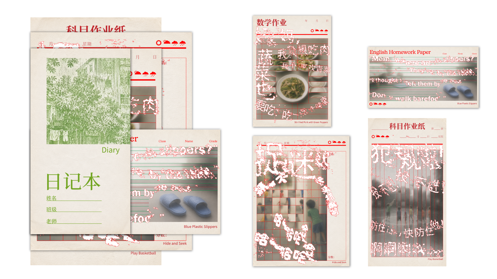
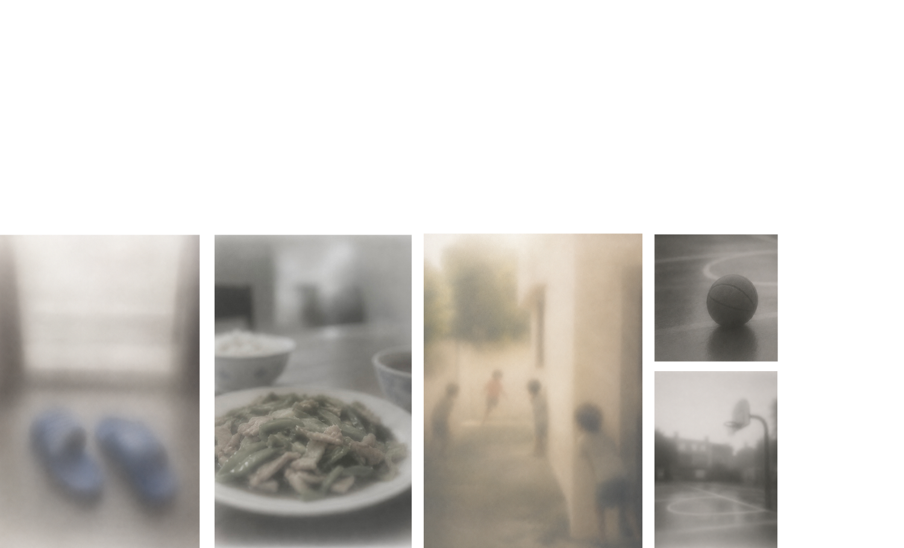
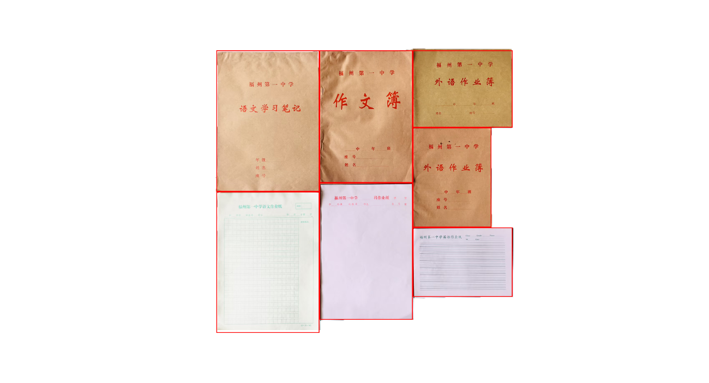
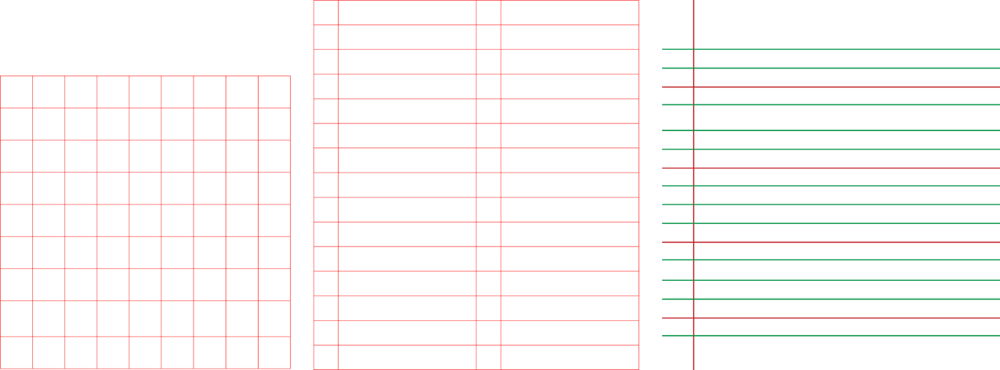
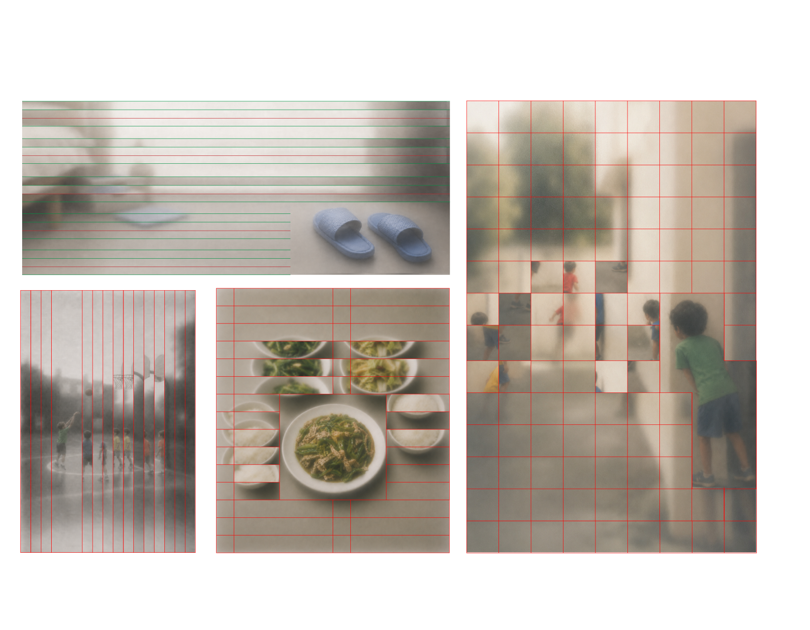
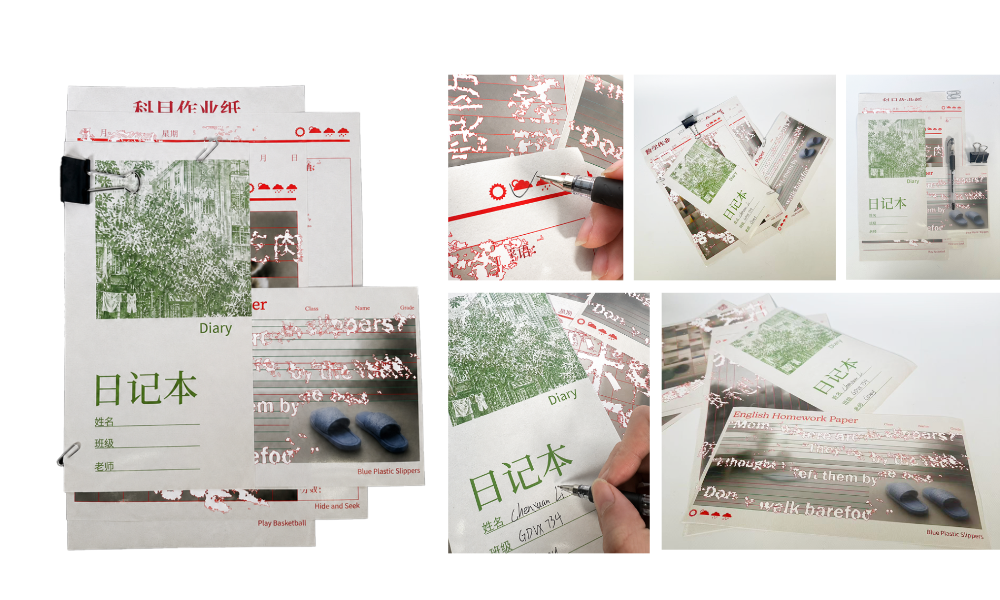
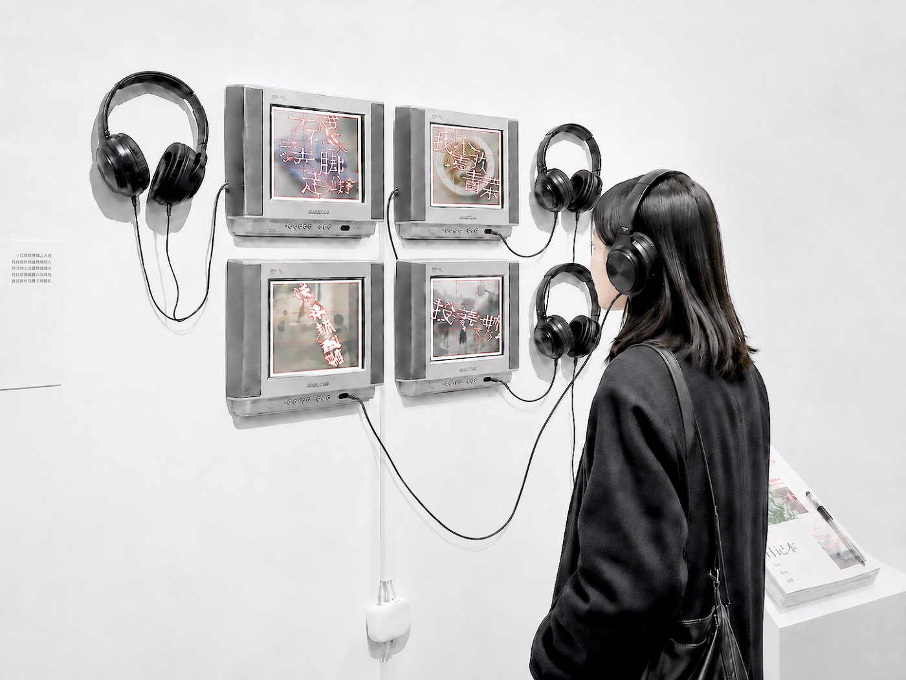
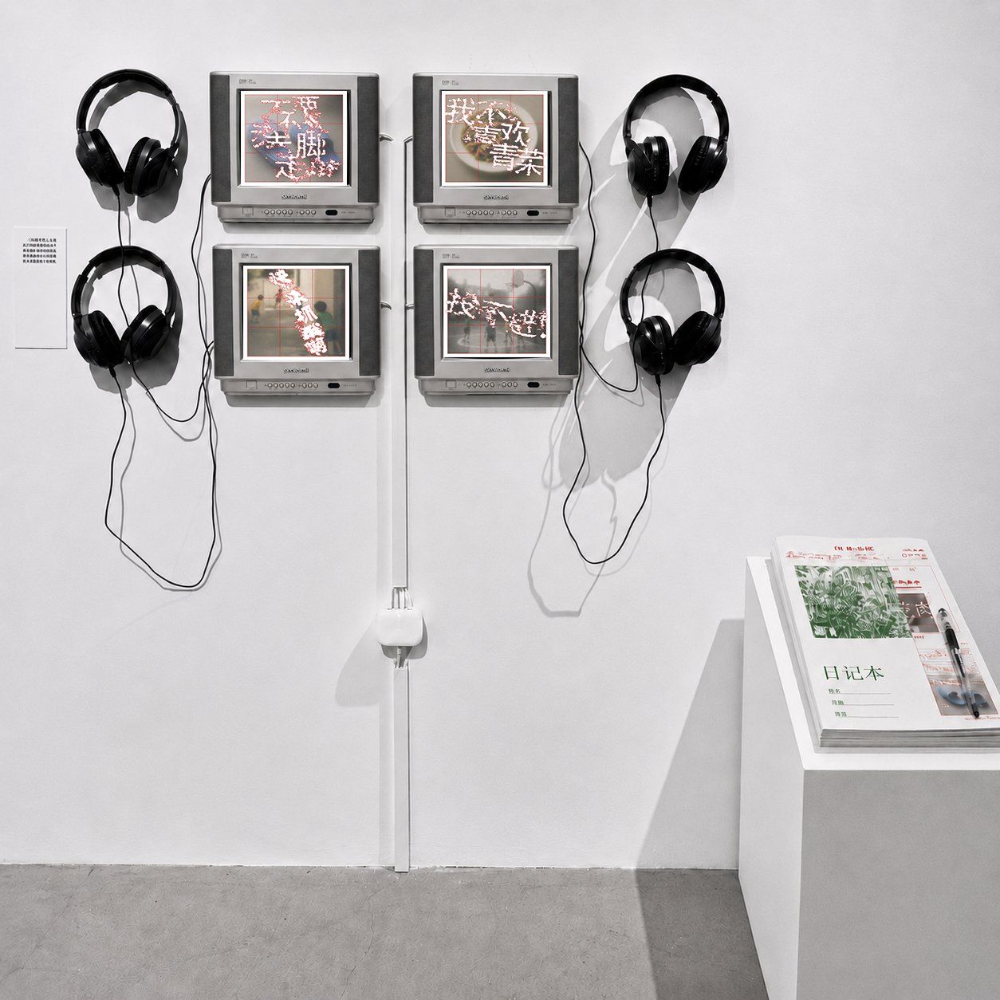

Reconstructing childhood diaries & homework

I deconstructed the boxes and horizontal lines from my childhood homework books and diaries because these writing formats once determined how I wrote, how I expressed myself, and even how I was evaluated. To me, the boxes and lines are not only structures on paper, but also symbols of the rules, assignments, and standard answers that restricted me during childhood.
Therefore, by breaking, shifting, blurring, and reorganizing these lines and frames, I transform the originally orderly writing system into a visual narrative — expressing my renewed understanding of, and release from, the sense of restriction in my childhood memories.
What I want to express is that truly touching typography does not always have to follow strict rules. Design should be brave enough to follow one's own thoughts, emotions, and memories. Just as my childhood self should not have been limited by the boxes and lines of homework paper, my adult self does not want my design practice limited only by fixed rules.
I extract everyday conversations from a single day of childhood life, including moments of playing, eating, and interacting with family. I reorganize these fragments into a diary-like narrative, using ordinary dialogue to reflect the warmth, rhythm, and blurred emotions of childhood memory.
“Mom, I don't want to eat vegetables.”
“You need to eat some vegetables too.”
“I only want to eat meat.”
“Eating some vegetables is healthier.”
“Mom, where are my slippers?”
“They're by the table.”
“I thought I left them by the bed.”
“Go put them on. Don't walk barefoot.”
“Come catch me! You can't catch me! Hahaha!”
“Foul!”
“You're gonna miss!”
“Block him! Block him!”
“Hhhhh!”



The lines, grids, and frames from childhood diaries and schoolwork become the visual structure of this piece, cutting, obscuring, and reconstructing blurred childhood memories. Domestic scenes, food, slippers, and children at play are surrounded by these disciplined lines, expressing a childhood memory where warmth and restriction coexist.


Four looping sequences — everyday childhood scenes with their handwriting fractured out of the homework grid, shifting and blurring line by line. Click a screen to play.

